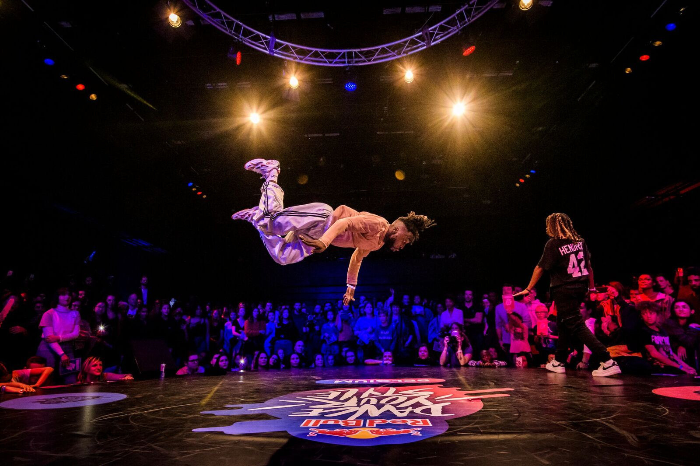

Známé světové soutěže
Street dance má po celém světě mnoho prestižních soutěží, které určují trendy a posouvají taneční komunitu dopředu. Jednou z nejznámějších je Red Bull BC One, zaměřená především na breaking a individuální battly. Další velkou událostí je Juste Debout, která se soustředí na stand-up styly jako hip hop, popping, locking nebo house. Tyto akce přitahují tisíce diváků i tanečníků z různých koutů světa. Soutěže často nabízejí workshopy a lekce od profesionálů, což pomáhá rozvíjet nové talenty. Díky těmto akcím roste povědomí o street dance a komunita se neustále propojuje.
Světové soutěže jsou důležité také proto, že ukazují, kam se jednotlivé styly vyvíjejí. Na battly přijíždějí špičkoví tanečníci, kteří předvádějí originální kombinace a nové techniky. Publikum se tak může seznámit s aktuálními trendy i s tradičními prvky jednotlivých stylů. Vítězství na prestižní soutěži často otevře tanečníkovi dveře k dalším projektům, workshopům nebo spolupracím. Velkou roli hraje i atmosféra, která je směsí soutěživosti, respektu a radosti z tance. Tyto akce tak nejsou jen o výkonu, ale i o sdílení kultury a vzájemné inspiraci.

Zpět na hlavní stranu:
Jiná podtémata: